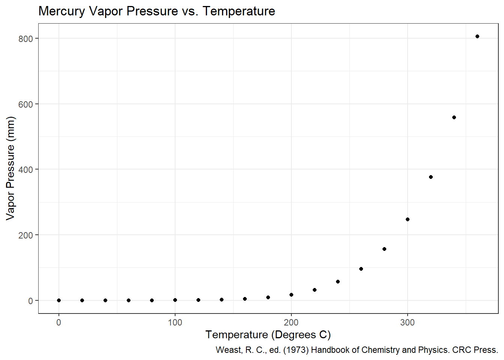
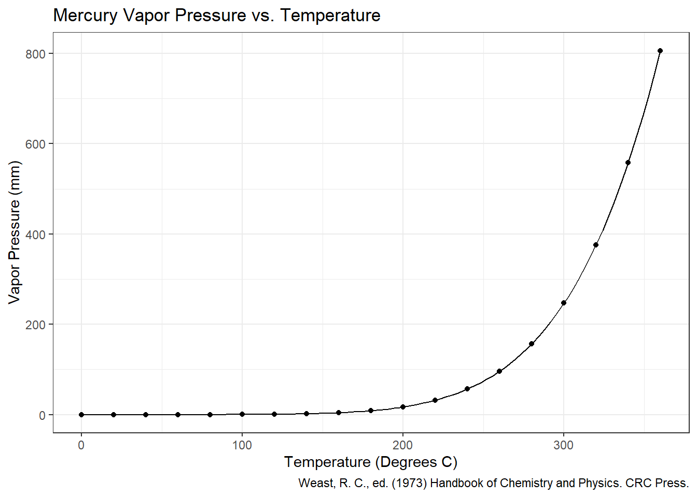
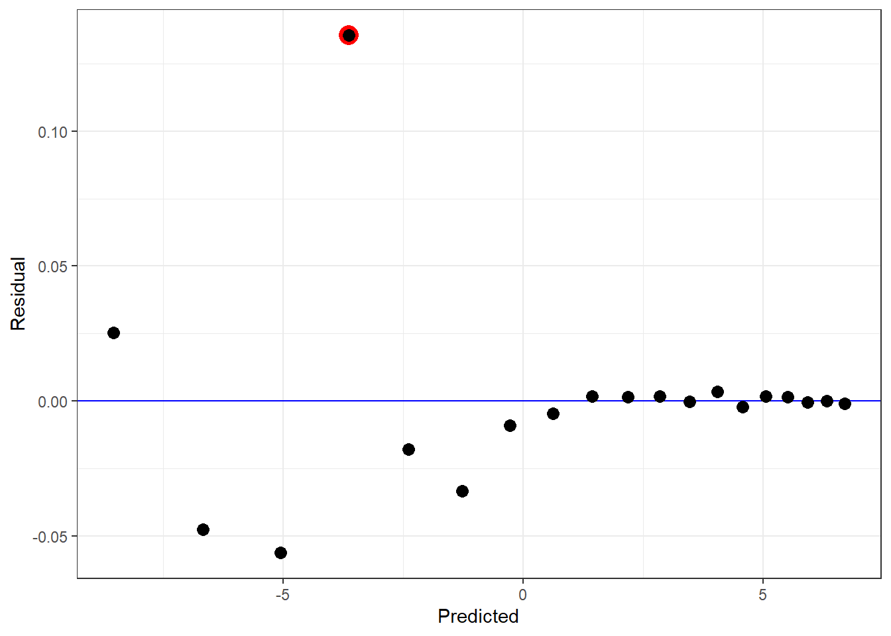

library(tidyverse)Vapor Pressure of Mercury
Intro
Using the built in pressure dataset, I want to fit a curve to fit vapor pressure of mercury (mm) as a function of the temperature (°C).
Setup
I will be using tidyverse packages for data visualization and manipulation.
Create Dataframe
I am creating a dataframe with the data from the pressure dataset.
pressure_df <- data.frame(pressure)
pressure_df |>
glimpse()Rows: 19
Columns: 2
$ temperature <dbl> 0, 20, 40, 60, 80, 100, 120, 140, 160, 180, 200, 220, 240,…
$ pressure <dbl> 0.0002, 0.0012, 0.0060, 0.0300, 0.0900, 0.2700, 0.7500, 1.…Plotting Data
Let us see what the data looks like so far.
pressure_df |>
ggplot(aes(temperature, pressure)) +
geom_point() +
labs(
title = "Mercury Vapor Pressure vs. Temperature",
x = "Temperature (Degrees C)", y = "Vapor Pressure (mm)",
caption = "Weast, R. C., ed. (1973) Handbook of Chemistry and Physics. CRC Press."
) +
theme_bw()
Curve Fitting
Based on my research online1 the equation \(\ln(P) = A - \dfrac{B}{T + C}\) can be used to model the relationship between Pressure (P) and Temperature (T). A, B, and C are constants. I have found the starting values of 10, -10, and 10 to work well when using nls() to fit the curve.
model <- nls(
log(pressure) ~ a + b / (temperature + c),
data = pressure_df,
start = list(a = 10, b = -10, c = 10)
)
model_summary <- summary(model)
coef <- model_summary$coefficients[1:3]
model_summary
Formula: log(pressure) ~ a + b/(temperature + c)
Parameters:
Estimate Std. Error t value Pr(>|t|)
a 17.8077 0.1549 114.99 <2e-16 ***
b -6920.2071 124.0160 -55.80 <2e-16 ***
c 262.6233 3.3939 77.38 <2e-16 ***
---
Signif. codes: 0 '***' 0.001 '**' 0.01 '*' 0.05 '.' 0.1 ' ' 1
Residual standard error: 0.04032 on 16 degrees of freedom
Number of iterations to convergence: 9
Achieved convergence tolerance: 7.281e-08From this we can see the values for A, B, and C of 17.807724, -6920.2070827, 262.6232889 respectively.
Curve Visualization
Now that I have the coefficients for the curve, I can plot it with the data to see the fit.
curve <- function(x) {
exp(coef[1] + coef[2] / (x + coef[3]))
}
pressure_df |>
ggplot(aes(temperature, pressure)) +
geom_point() +
labs(
title = "Mercury Vapor Pressure vs. Temperature",
x = "Temperature (Degrees C)", y = "Vapor Pressure (mm)",
caption = "Weast, R. C., ed. (1973) Handbook of Chemistry and Physics. CRC Press."
) +
theme_bw() +
geom_function(fun = curve)
Check Residuals
While the curve fits the data fairly well, it should be noted the residuals suggest the lower predictions do not fit as well as the higher values for this model. One points especially deviates from predictions.
broom::augment(model) |>
ggplot(aes(x = .fitted, y = .resid)) +
geom_abline(slope = 0, intercept = 0, color = "blue") +
geom_point(
data = broom::augment(model) |> filter(.resid > 0.1),
color = "red",
size = 5
) +
geom_point(size = 3) +
labs(x = "Predicted", y = "Residual") +
theme_bw()